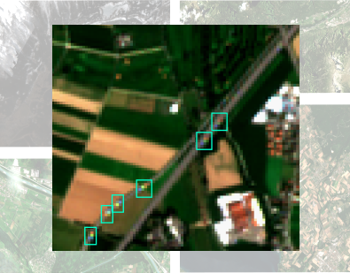
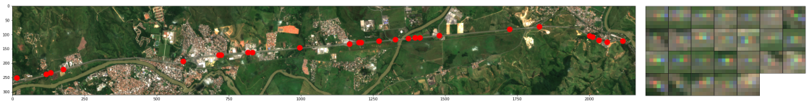
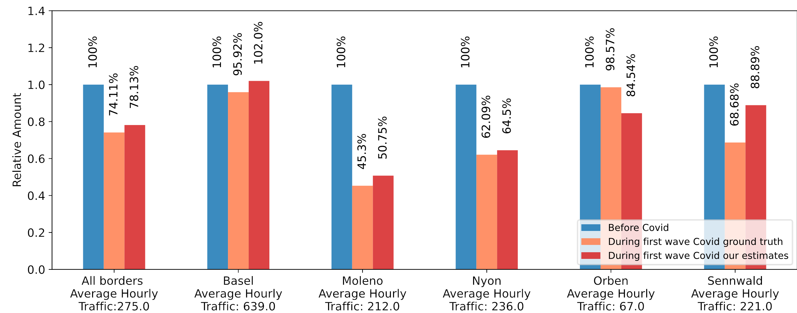

Commercial vehicle traffic is currently responsible for 7% of global CO2 emissions. While road freight will remain the dominant mode of surface freight transportation, its contribution to climate change is likely to increase in the short term. Therefore, the quantitative monitoring of commercial vehicle (CV) traffic is essential for implementing targeted road emission regulations. However, ground monitoring stations are costly and less than half of all countries worldwide collect road freight activity. In this work, we investigate the feasibility of detecting and monitoring CV traffic in freely available satellite imagery from ESA’s Sentinel-2 satellites.
{kind=link}


For this task, we obtain Sentinel-2 satellite imagery for 33 locations centered on Swiss freeway sections to identify CVs with a deep learning approach. We detect CVs with a modified Faster R-CNN object detection model by exploiting a characteristic feature of moving objects in Sentinel-2 data: a constant delay between image acquisition in the different channels leads to a characteristic “rainbow-like” appearance for objects that move at sufficient velocity, which is easy to detect. After training our model, we find an average precision score of 72% for the detection of CVs in our imaging data. The model further shows similar performance results for freeway sections outside of Europe (see figure below).
{kind=link}

For each freeway section location considered in this project, ground-truth traffic count data is available from ASTRA, allowing us to convert snapshot CV counts into hourly traffic rates for CVs. For this purpose, we trained gradient-boosted tree-based regression models in order to predict CV traffic rates from the number of CVs counted per freeway section from our imaging data in addition to other features. We find that it is possible to measure hourly CV traffic volumes for any freeway section in the world within 65% of the actual value or with a root mean square error (RMSE) of ∼160 vehicles per hour. For freeway sections with available but limited ground-truth data, we can predict CV traffic volumes up to within 4% and with an RMSE of ∼60 vehicles per hour. We find that our models are best applied to satellite images with low cloud coverage and for freeway sections above 1 kilometer in length.
{kind=link}

Additionally, our results enable the estimation of the relative decline in CV traffic due to lockdown measures during the first wave of the COVID19 pandemic in Switzerland in 2020 (see figure above).
To conclude, our approach enables the estimation of CV traffic rates from remote sensing data only, which makes it applicable on a global scale. The methods presented here constitute a powerful tool to estimate CV traffic rates in areas in which ground-based traffic rate measurements are unavailable.
This project is based on the results of the Master thesis of MBI student Moritz Blattner, who also presented this project at the ICML 2021 Tackling Climate Change with Machine Learning Workshop.
Resources
- Blattner, M., Mommert, M., Borth, D., “Commercial Vehicle Traffic Detection from Satellite Imagery with Deep Learning”, ICML 2021 Tackling Climate Change with Machine Learning Workshop publication (open access).